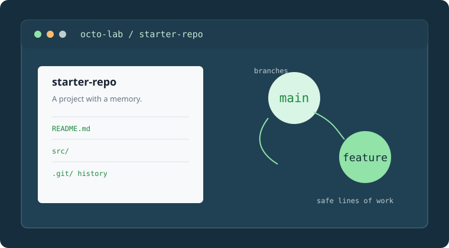
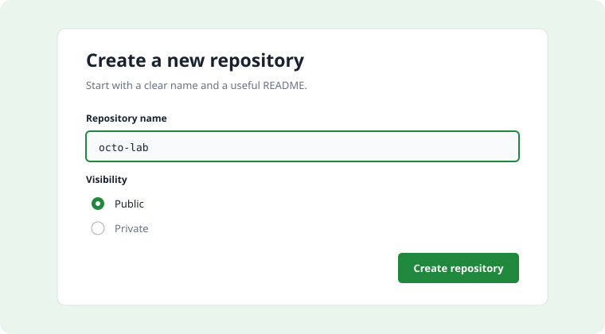
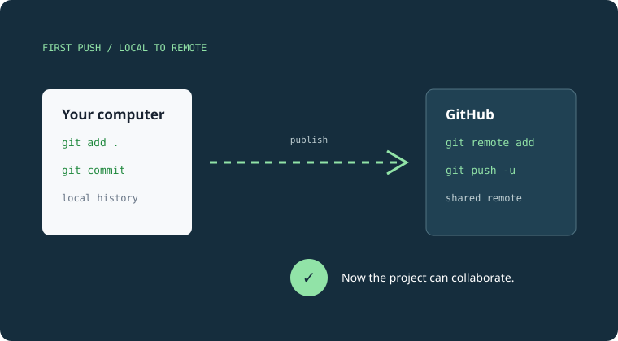

Local repository
The copy on your computer where you edit files, create commits, and work offline.
Module 02 · Core exam domain
Turn an idea into a home for collaboration. Learn what a repository contains, how to create one with intention, and how to publish your first local project.
01 / The big idea
A GitHub repository is more than a folder for code. It is the place where a project’s files, history, documentation, permissions, and conversations can live together. A thoughtful repository makes the next contribution easier to understand.

One home, several useful layers: the files people use, the README people read, and the history that explains how the project changed.
The copy on your computer where you edit files, create commits, and work offline.
The hosted copy on GitHub where teammates can discover, review, and contribute.
02 / Start with intention
A good repository begins with a name that says what the project is and a README that tells people where to begin.

When creating a repository, choose a clear name, select public or private visibility deliberately, and initialize the README when the project needs an immediate landing page.
03 / From local to shared
If the project already exists on your computer, connect it to GitHub and push the first commit so the shared repository has a starting point.

The first push publishes your local history. From there, future work can move through branches and pull requests.
git init→git add .→git commit -m "Initial commit"→git push -u origin main04 / Retrieval practice
05 / Check your understanding
Answer all six questions. Your results will point you toward the repository topics worth revisiting.